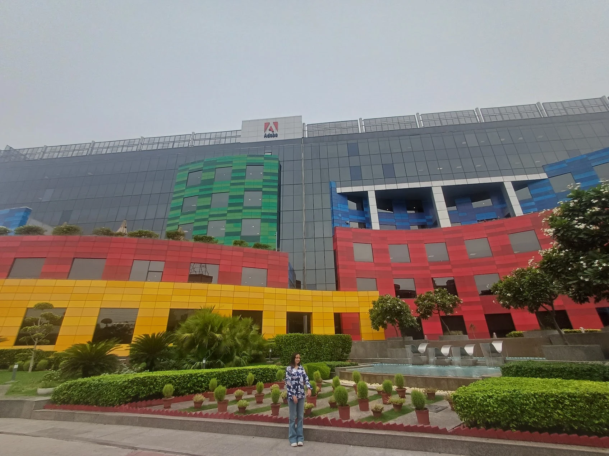
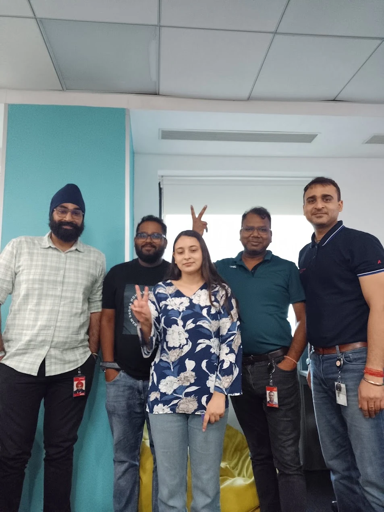

96% reported accuracy.
Prediction accuracy from my project results. Explore the case study for the evaluation context.
My time at Adobe, where AI met engineering — and ideas became something I could build, question, and learn from.
Meet the project ↓
01 / THE EXPERIENCE
As a Product Intern – Technology in Adobe’s AMS Enterprise team, I worked on ARGUS AI, an intelligence layer for Adobe Cloud Manager that brings together deployment risk assessment, failure diagnosis, and reusable engineering knowledge. The project was integrated into Adobe's internal tooling and is used by its engineers.
This journal brings together the work, the people, and the moments that made the experience mine.
02 / PROJECTS
Deployment intelligence for Adobe Cloud Manager. Predict risk, diagnose failures, and learn from every analysed run.
03 / WHAT I TOOK AWAY
Prediction accuracy from my project results. Explore the case study for the evaluation context.
ARGUS became part of Adobe's internal tooling, bringing deployment intelligence into engineers' daily work.
Shared the project journey, its architecture, and its value for engineering and release decisions.
04 / TECHNICAL EXPOSURE
Also explored: Azure File Share, BGE reranking, Claude, Gemini, structured AI outputs, and tenant-scoped memory.
05 / THE PEOPLE BEHIND THE CHAPTER
This chapter took shape with the AMS Enterprise team, with Shantanu Bagchi as my manager and Anuj Gangwar as my mentor. Alongside the engineering, I'm keeping the shared moments, conversations, and people who made the experience memorable.
The best part? The people.
AMS ENTERPRISE · ADOBE, NOIDA
06 / LITTLE KEEPSAKES
A chapter in my journey as an engineer. A foundation for what comes next.
Go deeper into ARGUS AI ↗